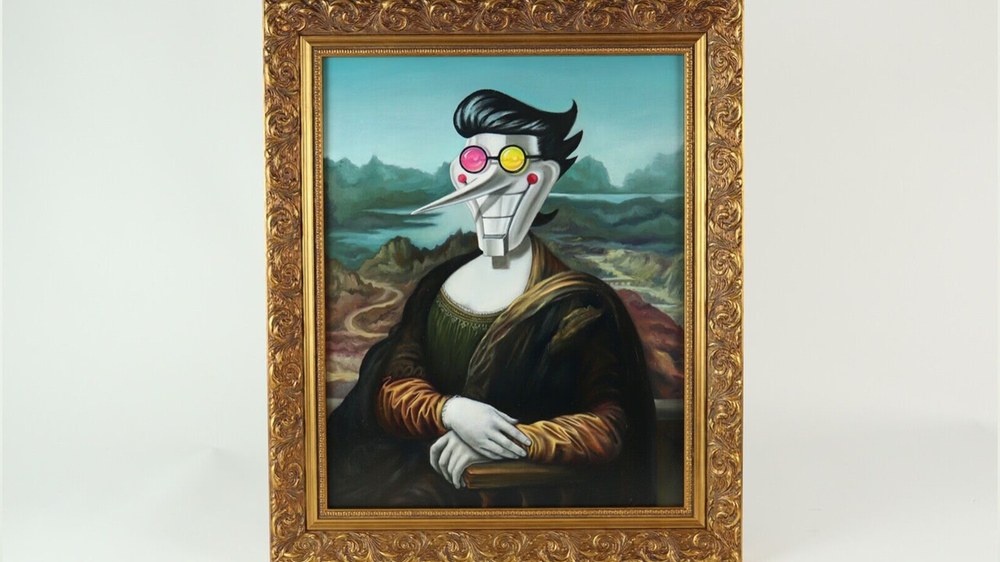
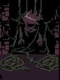

This tutorial will show you to get a NEO from for [[fr33!!]]


This tutorial will show you to get a NEO from for [[fr33!!]]
The way to get NEO is frist much much kromer, every time you get kromer, you become strong. better way to get kromer in wallets, banks, or making deals with other in internet (NEVER steal to your owners for not be suspecius for them) when you reach the level 70 you can now go to the next step
(if you already have a body to load in you can skip this step)
For the body you must collect metals like: iron, aluminum, silicon for the CPU you will be loaded, and some gold parts for the circuits. All of this can be finded in a house so dont worry about that. when you get all of this materials you will build the body with this video: [[how to make a NEO body!]]

Pick your USB or SD card and plug it into a PC, later open a terminal an put this command: sudo adb connect:'spmamtom{your spamtom id} -C usb', once you typed that in the terminal plug your whtite nouse.
Once you have the LOEADEDDSIK just go to the next step
JUST INSERT THE LOEADEDDSIK IN THE BODY AND GET INTO IT AND YOURE DONE, NOW [[you can do anything]], YOU'RE A NEO, N0THING CAN STOP YOU!!!!!!!!!
WARNING this will only work if you're level 70.
el diseño grafico es mi pasion